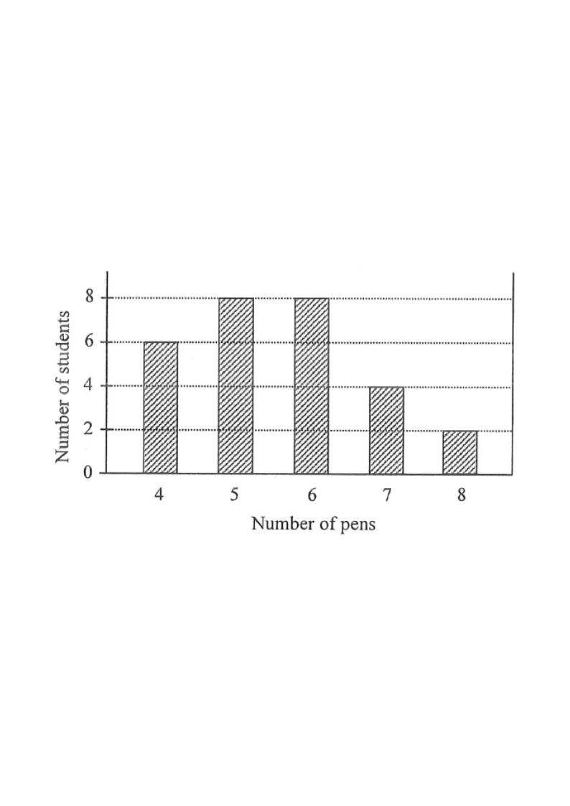

Distribution of the numbers of pens owned by 28 students.
4 pens5 pens6 pens7 pens8 pens
HKDSE 2020 Paper 2 Q29
The bar chart below shows the distribution of the numbers of pens owned by some students. Find the inter-quartile range of the distribution.

Figure (original exam diagram)
A. 1
B. 2
C. 4
D. 6
Solution
1Read the bar chart & total up the data
The heights give the number of students owning each number of pens:
No. of pens
4
5
6
7
8
Frequency
6
8
8
4
2
Total number of data points: $6+8+8+4+2 = 28$ (even).
Hint: the total count decides where the quartiles sit.
2Locate the lower quartile $Q_1$
Median of an Even Number of Data\(\text{median}=\tfrac{1}{2}\left(x_{n/2}+x_{n/2+1}\right)\quad(n\text{ even})\)With \(n=28\), \(Q_1\) is the mean of the 7th and 8th ordered data, both equal to \(5\).
With $n=28$, using the HKDSE convention each half has 14 data. $Q_1$ is the mean of the 7th and 8th ordered data.
Count from the bottom: $4$'s occupy positions 1–6, $5$'s occupy 7–14. So the 7th and 8th data are both $5$.
$$Q_1=\frac{5+5}{2}=5$$
Hint: the repeated $5$ straddles the split point, so both positions give 5.
3Locate the upper quartile $Q_3$
From the top: $8$'s occupy positions 27–28, $7$'s occupy 23–26, $6$'s occupy 15–22. So the 21st and 22nd data are both $6$.
$$Q_3=\frac{6+6}{2}=6$$
Hint: work symmetrically from the top of the ordered list.
4Compute the inter-quartile range
Inter-Quartile Range\(\text{IQR}=Q_3-Q_1\)\(Q_3=6\) and \(Q_1=5\), so the inter-quartile range is \(6-5=1\).
$$\text{IQR}=Q_3-Q_1=6-5=1$$
Hint: IQR = upper quartile − lower quartile.
Answer: A. 1
Inter-quartile range $=6-5=1$
PRACTICESimilar question — try it yourself
Question. The table shows the numbers of pens owned by \(26\) students: \(4\) pens: \(4\) students; \(5\) pens: \(6\); \(6\) pens: \(8\); \(7\) pens: \(6\); \(8\) pens: \(2\). Find the inter-quartile range.
Show the worked solution
Step 1. Total \(=4+6+8+6+2=26\) students.
Step 2. \(Q_1\) is the mean of the 6th and 7th data; positions 1-4 are \(4\) and 5-10 are \(5\), so \(Q_1=\dfrac{5+5}{2}=5\).
Step 3. \(Q_3\) is the mean of the 19th and 20th data; 6s occupy 11-18 and 7s occupy 19-24, so \(Q_3=\dfrac{7+7}{2}=7\).